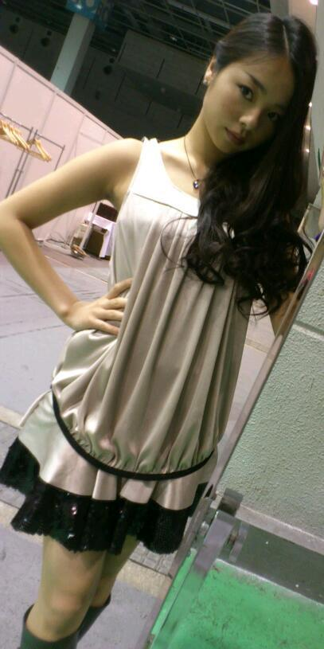
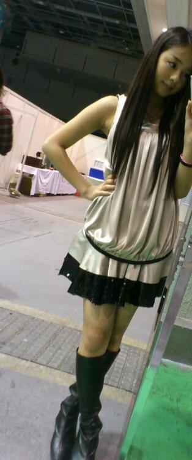

ほいっ☆こんにちわ^^
ろってぃー♪です,
更新ちょっと
おそくなっちゃって
ごめんなさい(..)
ちょっと携帯
おかしなってもてさっ))...。
で、
この土曜日、日曜日と
個握と全握☆!!
髪型と服は
こんな感じです*・ω・*

この写真が
ヘアメイクを済ませた
後です♪
名古屋に東京に大阪、
それぞれ服も髪型も
違う感じにしてました〃ω〃
巻いて髪の毛を右側に
寄せてます♪
来てくださった
ファンのみなさん、
本当にありがとう
ございました(*^^*)
握手会ってやっぱ
大好きっ))
みなさま♪と
会えるし話せるから〃ω〃
本当に天気よくて
全握なんかは
ずっと外たから
暑かったですね^ω^
みんな、日焼けして
腕も顔も赤く
なってましたね/(T_T)
大丈夫ですか・ω・`?
でも大阪最高やったなWWWW♪♪
早くまた皆さまに
あいたいなぁ〜。ω
また更新します♪
それと写メものせます♪
あっ、ダイエットして
2キロ減らしたのに
大阪から帰ってきたら
戻ってた(>ω<)
かなりのショック(T_T)
また頑張ります♪笑
また更新します・ω・☆/
